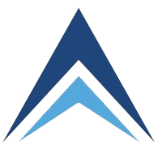
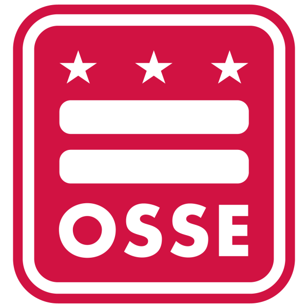
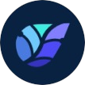
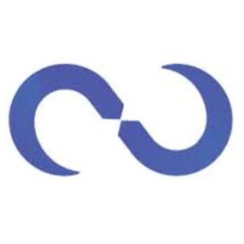
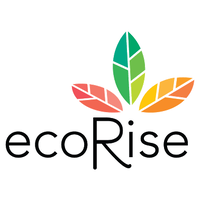

{{ 'EXPERIENCE.EDUCATION' | translate }}
{{experience.position}}
{{experience.company}}
{{experience.employmentType}}
{{experience.startDate | date : 'mediumDate'}} – {{experience.endDate | date : 'mediumDate'}} Present
{{getDuration(experience.startDate, experience.endDate)}}
{{experience.location}}
{{ 'EXPERIENCE.EXPERIENCE' | translate }}

Senior Software Engineer
Advent Infotech LLC
Full-time
{{'2022-07-01T00:00:00.000Z' | date : 'mediumDate'}} – {{'2026-08-01T00:00:00.000Z' | date : 'mediumDate'}}
{{getDuration('2022-07-01T00:00:00.000Z', '2026-08-01T00:00:00.000Z')}}
Washigton, DC
Columbus, IN | Mar 2022 – Aug 2026
Tech Stack: ASP.NET, .NET, Razon Pages, Blazor, Telerik, Kendo UI, Node.js, Angular, SQL Server, Azure (App Service, Key Vault, Azure SQL, App Configuration Service, Functions, Blob, Active Directory, OAuth2, Delta Lake, AI Search, Redis, APIM, ADF, Azure Events), Power BI, Azure DevOps, Azure DevOps Pipelines, Azure Insights, Cosmos DB, Serverless. Intelligent document processing, Agentic Development, Agentic PDLC, AI Orchestration
Key Achievements
- Standardized financial processes across IT.
- Reduced manual workload through automation.
- Improved decision‑making with real‑time analytics and dashboards.
Initiatives
Go‑To‑Market Tools
- Internal enterprise platform used by 100+ users for pricing, cost management, forecasting, reporting, and analytics.
- Generated thousands of quotes and automated discount approvals.
- Integrated Azure AI Search, Redis caching, and distributed processing for high performance.
Houkoku Renraku Soudan (HRS)
- Full IT Asset Management system aligned with auditor and governance controls.
- Automated Asset Expenditure Requests, SOWs, and invoicing using AI‑based document processing.
- Improved financial transparency and stakeholder trust.
Mercury
- Pricing‑approval and analytics tool for analysts and executives.
- Added dashboards, trend analysis, embedded Power BI, and approval workflows.

Office of the State Superintendent of EducationWashington, DC | Mar 2022 – Mar 2023
Tech Stack: Angular, .NET, SQL Server, Azure Functions, Blob Storage, Redis, AAD, B2C, GitHub Actions, Pipelines, Excel integrations, PDF generation, Entity Framework, Python, Share Point
Key Achievements
- Delivered mission‑critical systems for public safety, health, and education.
- Enabled real‑time reporting for the Mayor, DC Council, and the Healthy Youth & Schools Commission.
- Improved the lives of 10000+ children helping their school adopt better health standars
- Helped District’s schools to achieve the goals of the Healthy Schools Act of 2010 Made 251 schools healthier and made a positive impact on 93,843+ students
- Promptly and properly notified and informed schools, parents, and emergency services about incidents, accidents, and complaints
Initiatives
Division of Transportation Case Management System
- Managed and maintained 200,000+ cases for student transportation.
- Improved transportation services for 93,843+ students across 251 schools.
- Built dynamic forms, notifications, PDF generation, and integrations with multiple external systems.
School Health Profiles Portal
- Developed a dynamic, metadata-driven form engine supporting 400+ questions to assess school health compliance.
- Enabled compliance reporting for the Healthy Schools Act, used by 1,000+ users.
- Built dashboards, reports, and data‑access layers for LEAs and government officials.
Senior Data Scientist
One Auction View
Consultancy
{{'2020-11-01T00:00:00.000Z' | date : 'mediumDate'}} – {{'2022-07-01T00:00:00.000Z' | date : 'mediumDate'}}
{{getDuration('2020-11-01T00:00:00.000Z', '2022-07-01T00:00:00.000Z')}}
Redlands, California
Tech Stack: React, Node.js, NestJS, Cosmos DB, Databricks, Python, Spark, Power BI, Azure Functions, PostgreSQL, Docker, Terraform, AI, Cypress, Playwright, AI Vibe Coding
Initiatives
Retail Vision by One Auction View (Data Platform)
- Processed and analyzed multi‑million‑record datasets from the automotive industry.
- Built dashboards and forecasting models used by 20+ dealerships and financial institutions.
- Designed and deployed a nationwide recommendations engine for U.S. vehicle dealerships, enabling data‑driven inventory acquisition to maximize profitability, fully integrated with One Auction View to streamline the end‑to‑end recommendation‑to‑purchase workflow.
- Designed data pipelines using Databricks, Delta Lake, and distributed computing.
- Improved inventory decisions and profitability through segmentation and predictive analytics.
OAV Portal (Head of QA)
- Built a unified auto auction platform for dealerships.
- Developed a multi-auction vehicle sourcing platform.
- Created a centralized vehicle acquisition portal.
- Built a dealer inventory acquisition platform.
- Developed a vehicle sourcing and auction management portal.
Senior Full-stack Developer
Zurich Insurance Company Ltd
Full-time
{{'2020-11-01T00:00:00.000Z' | date : 'mediumDate'}} – {{'2022-07-01T00:00:00.000Z' | date : 'mediumDate'}}
{{getDuration('2020-11-01T00:00:00.000Z', '2022-07-01T00:00:00.000Z')}}
Mexico City, Mexico
Tech Stack: .NET, Blazor Server, SQL Server, Azure, Redis, Jenkins, Jira, Cosmos DB, Docker, Blazor Web Assembly, Microsoft Entity Framework, Dynatrace, Azure Pipelines, Azure Devops, Third Party Integrations, Share Point, Office SDKs, R, Python, BigQuery, BigQuery ML, Vertex AI, Snowflake, Snowpark, statsmodels, scikit-learn, PySpark, XGBoost, LightGBM, Docker, Google Cloud Platform, Cloud Storage, Cloud IAM, Cloud DLP, Cloud Scheduler, Vertex AI Pipelines, Kubeflow, Vertex AI Vizier, Vertex AI Model Registry, Looker Studio, BigQuery BI Engine, REST APIs
Key Achievements
- Enabled financial Analysts, Underwriters, and Account Managers to automate their workflows.
- Successfully developed and deployed sureties administration system for Zurich North America.
- Successfully developed and deployed underwriting systems for exporter's property and casualty in North America.
Initiatives
Sureties ERP (North America)
- Built underwriting automation, financial analysis tools, and policy management workflows.
- Migrated legacy systems while maintaining production stability.
- Implemented risk assessment, pricing, financial statements parsing, and compliance modules.
Exporter Solutions
- Customer‑facing underwriting and policy‑issuance platform used by 10,000+ brokers.
- Delivered full workflow: data entry → pricing → underwriting → policy issuance.
- Data engineering: Built an end-to-end pricing pipeline on the CAS insurance dataset. R handles ingestion into partitioned BigQuery tables, SQL and BigQuery ML handle cleaning, standardization and feature engineering, and the features are kept in reusable feature tables.
- Actuarial modeling at scale: Trained Poisson/Negative Binomial frequency and Gamma/Lognormal severity GLMs in Python (statsmodels / scikit-learn), and benchmarked them against XGBoost/LightGBM using SHAP for interpretability. Training ran as containerized Vertex AI custom jobs, orchestrated with Vertex AI Pipelines and tuned with Vizier.
- Production MLOps and governance: Served premium predictions through a REST endpoint, with drift and fairness monitoring and automated retraining via Cloud Scheduler. Versioned models in the Model Registry and secured data with IAM and Cloud DLP to meet regulatory requirements. Costs stayed under $35 through right-sized, one-off compute.

CSO Co-Founder
Kalyptio
Self-employed
{{'2019-01-01T00:00:00.000Z' | date : 'mediumDate'}} – {{'2022-01-01T00:00:00.000Z' | date : 'mediumDate'}}
{{getDuration('2019-01-01T00:00:00.000Z', '2022-01-01T00:00:00.000Z')}}
Mexico City, Mexico
Led strategy, architecture, UX, development, DevOps, and delivery for 30+ clients.
Initiatives
- Aurora Admin Panel: CMS for courses, events, news, and users (Angular + NestJS + MongoDB).
- Staff Plan: Staff management system (AWS + Lambda + Node.js).
- Eva: Marketing Funnel (AWS + Lambda + Python).
- Medkush: E‑commerce platform (Angular + Serverless + MongoDB).
- Newt Payments: Payments Platform (Angular + Nest + MongoDB + SQL + AWS).
- Finero: Payments and remittances platform (Angular + Node.js + AWS).
Lead Developer
Neolinx de Mexico
Full-time
{{'2014-01-01T00:00:00.000Z' | date : 'mediumDate'}} – {{'2019-01-01T00:00:00.000Z' | date : 'mediumDate'}}
{{getDuration('2014-01-01T00:00:00.000Z', '2019-01-01T00:00:00.000Z')}}
Mexico City, Mexico
Tech Stack: ASP.NET, .NET, Ext.NET, Angular, Node.js, SQL Server, Oracle, SignalR, Firebase, Azure, MySQL, JAVA, FTP, Oracle DB, PL/SQL, Linux Servers, On-prem Deployments, D3 JS, Angular Material, Postman, SOAP, TCP/IP
Key Achievements
- Processed 700M+ telecom records (CDRs) for national security agencies (PGR, CISEN).
- Built real‑time analysis tools used in tactical operations, helping prevent crimes and save lives.
- Delivered full‑stack systems for link analysis, geolocation, and intelligence workflows.
Initiatives
Matrix Cacther
-
Locate mobile phone subscribers covertly anywhere in the world using telecom infrastructure rather than fake cell towers.
-
Determine status, location, and movement of targets across a city, region, or entire country with high precision.
-
Perform massive numbers of searches — e.g., 135,000 real‑time location lookups under a single contract.
Trinity
-
Full call‑content interception: RCS allowed authorities to listen to live phone calls, record them, and capture VoIP calls (WhatsApp, Skype, Viber) directly from infected devices.
-
Device‑level infection for total access: The system infiltrated phones through remote exploits or physical access, turning the device into a surveillance sensor capable of capturing calls, ambient audio, messages, files, and more.
-
Operating platform: Maintained the system for Mexican agencies, providing infrastructure and operational support, leveraging interception technology developed by Hacking Team (Italy).
Morpheus
-
Central surveillance dashboard: Morpheus functioned as Neolinx’s unified command‑and‑control interface, letting Mexican agencies manage targets, organize cases, and view results from multiple interception systems in one place.
-
Data‑fusion and orchestration layer: It aggregated outputs from foreign tools Neolinx sold — Hacking Team RCS, SS7/telecom lawful‑interception modules, Rayzone geolocation and metadata platforms — without performing interception itself.
-
Operational workflow system: Morpheus provided automation for surveillance tasks (tasking, evidence tagging, reporting, chain‑of‑custody), serving as the operational glue that connected and streamlined all other SIGINT tools Neolinx deployed
Zion
-
Real‑time operations console: Sion served as Neolinx’s live monitoring interface, showing active infections, geolocation queries, and lawful‑interception streams in one unified dashboard.
-
Multi‑system orchestration: It coordinated actions across all surveillance tools Neolinx deployed—triggering tasks, pulling data, and synchronizing results—without performing interception itself.
-
Audit and compliance layer: Sion logged operator actions, maintained chain‑of‑custody records, and packaged evidence for legal or internal review, acting as the oversight framework for surveillance operations.

Junior Full-stack Developer
Grupo Koomkin
Full-time
{{'2016-08-01T00:00:00.000Z' | date : 'mediumDate'}} – {{'2017-02-01T00:00:00.000Z' | date : 'mediumDate'}}
{{getDuration('2016-08-01T00:00:00.000Z', '2017-02-01T00:00:00.000Z')}}
Mexico City, Mexico
Tech Stack:Syncfusion, Angular, Node.js, SQL Server, SignalR, Firebase, FTP, Linux Servers, Facebook Graph API, Facebook SKD, On-prem Deployments, D3 JS, Angular Material, Bootstrap, Postman, GoDaddy, C Panel
- Analyzed digital marketing campaigns data to maximize lead conversion rates for customers.
- Coded algorithms and designed UI UX flows for lead generation in digital platforms.
- Successfully increased the lead conversion ratio for 40+ clients.

Producer
Ecorise Youth Innovations
Part-time
{{'2016-08-01T00:00:00.000Z' | date : 'mediumDate'}} – {{'2017-02-01T00:00:00.000Z' | date : 'mediumDate'}}
{{getDuration('2016-08-01T00:00:00.000Z', '2017-02-01T00:00:00.000Z')}}
Austin, Texas
- Pedagogue, designer, and producer of educational interactive and animated content.
- Animated over 40 educational video lectures for hundreds of students coursing elementary school.
{{ 'EXPERIENCE.PROGRAMING_LANGUAGES' | translate }}
R, TypeScript, C#, JavaScript, SQL, Python, Java, Visual Basic, Objective C, RMarkdown, Bookdown, MatLab, Maple, LaTeX, HTML5, CSS, SCSS, JSON, Yml, PL/SQL
{{ 'EXPERIENCE.FRAMEWORKS' | translate }}
Next JS, Angular, Angula Material, Node JS, Express, NestJS, ReactJS, Redux, RxJs, Blazor Server, Blazor WebApp, Razor Pages, Progress Telerik, Kendo UI, .NET Framework, .NET, ASP.NET, ASP.NET MVC, Polymer, TypeORM, Bootstrap, Syncfusion, Ext.Net, D3 JS, Signal R, Office SDKs, Entity Framework, REST APIs, Serverless
{{ 'EXPERIENCE.DATABASES' | translate }}
MongoDB, PostgreSQL, MySQL, SQL Server, Azure SQL, MySQL, Cosmos DB, Microsoft Access, Oracle, Oracle DB, Redis, BigQuery, Snowflake, Delta Lake, Databricks
AI Search, Agentic Development, Agentic PDLC, AI Orchestration, Intelligent Document Processing, Vertex AI, BigQuery ML, Kubeflow, scikit-learn, statsmodels, XGBoost, LightGBM, PySpark, Spark, Snowpark, SHAP
Microsoft Azure
Azure, App Services, Azure Functions, Azure Storage, Azure Blob Storage, Azure Media Services, Azure Virtual Machines (VMs), Azure Active Directory (Azure AD), Azure AD B2C, Azure API Management (APIM), Azure Key Vault, Azure App Configuration Service, Azure Web PubSub, Azure Event Grid, Azure Service Bus / Message Queue, Azure DevOps, Azure Pipelines, Azure Releases
Amazon Web Services (AWS)
AWS, AWS Lambda, API Gateway, Amazon S3, Amazon EC2
Google Cloud Platform (GCP)
Google Cloud Platform (GCP), Cloud Functions, Cloud Storage, Cloud IAM, Cloud DLP, Cloud Scheduler, BigQuery, Vertex AI, Vertex AI Pipelines, Vertex AI Model Registry, BigQuery MLß
Deployment & Hosting Platforms
Azure, AWS, Google Cloud Platform, Heroku, Netlify, Godaddy
DevOps & Source Control
Git, Azure DevOps, GitHub Actions, GitLab, Bitbucket, Jenkins, Terraform, Docker, Linux Servers, Serverless Architecture
Third-Party Services & Integrations
Twilio, SendGrid, Stripe, DHL APIs, FedEx APIs, OFAC Screening Integrations, OAuth2, SOAP, REST APIs, Facebook Graph API, SharePoint, Excel Integrations, PDF Generation
{{ 'EXPERIENCE.TOOLS' | translate }}
Visual Studio 2022, Microsoft Visio, Visual Studio Code, Postman, SQL Server Management Studio, Sublime Text, Notepad++, Fiddler, Office Suite, Sketch, Photoshop, Illustrator, After Effects, Oracle Developer
{{ 'EXPERIENCE.FREELANCE' | translate }}
Instructor
JAN 2019 - PRESENT
I teach online courses and create tutorials for students who want to get started in the software development industry.
I have taught hundreds of hours of programing lectures.
{{ 'EXPERIENCE.ACHIEVEMENTS' | translate }}
Advisor and judge appointment
OCT 2018
I was appointed to be judge and advisor of the UNAMxHacks Hackathon organized by the National University of Mexico (UNAM).
Helped contenders to choose and implement different technologies in order for them to solve the event's challenges.
{{ 'EXPERIENCE.ONLINE_COURSES' | translate }}
The Complete Node.js Developer Course
Angular - The Complete Guide
NestJS Zero to Hero - Modern TypeScript Back-end Development
AWS Serverless APIs & Apps - A Complete Introduction
Blazor: Getting Started
{{ 'EXPERIENCE.MY_TIME' | translate }}
{{ 'EXPERIENCE.OTHER_ACTIVITIES' | translate }}
- {{ 'EXPERIENCE.FRIENDS_AND_FAMILY' | translate }}
- {{ 'EXPERIENCE.DOGS' | translate }}
- {{ 'EXPERIENCE.MOVIES_AND_SERIES' | translate }}
- {{ 'EXPERIENCE.MUSIC' | translate }}
- {{ 'EXPERIENCE.COOKING' | translate }}